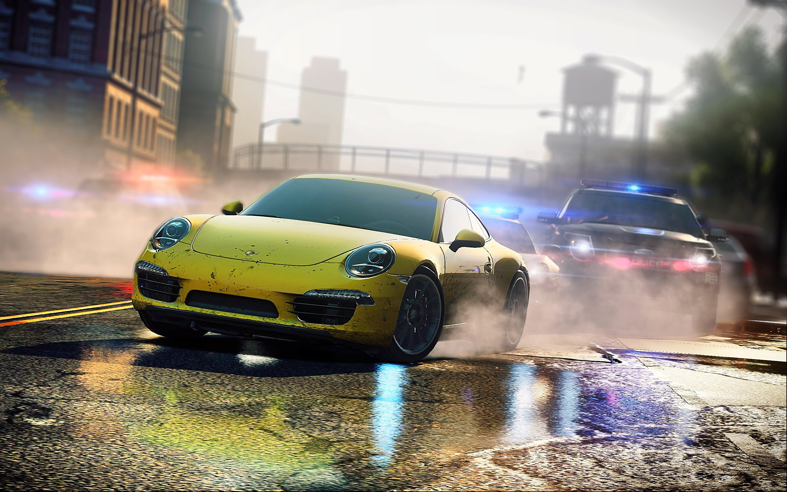

NFS Most Wanted 2012
Need for Speed: Most Wanted is a 2012 racing game developed by Criterion Games and published by Electronic Arts. Most Wanted is the nineteenth title in the Need for Speed series and was released worldwide for Microsoft Windows, PlayStation 3, Xbox 360, PlayStation Vita, iOS and Android, beginning in North America in 2012. A Wii U version, under the title Need for Speed: Most Wanted U, was released in 2013. Like its predecessor, the 2010 Hot Pursuit title, the game is a revival of the original 2005 Most Wanted title. Need for Speed Most Wanted received positive reviews, which focused on the world map that blended the styles of previous Burnout and Need for Speed games, and the social features, while criticism fell on the single-player mode. The game has won several awards, including the 2012 Spike Video Game Awards for Best Driving Game and was nominated for Best British Game and Best Online Multiplayer at the 2013 BAFTA Awards, and was repeatedly recognized as the best driving/racing game of 2012 by several outlets.


So what are System Requirements?
Minimum System Requirements :
CPU: Core 2 Duo 2.4 GHz or Althon X2 2.7 GHz
CPU SPEED: Info
RAM: 2 GB
OS: Windows Vista (Service Pack 2) 32-Bit
VIDEO CARD: ATI RADEON 3870 or higher performance / NVIDIA GEFORCE 8800 GT or higher performance
PIXEL SHADER: 4.0
VERTEX SHADER: 4.0
SOUND CARD: Yes
FREE DISK SPACE: 20 GB
DEDICATED VIDEO RAM: 512 MB
CPU: Quad-Core CPU
CPU SPEED: Info
RAM: 4 GB
OS: Windows 7 64-Bit
VIDEO CARD: NVIDIA GEFORCE GTX 560 or ATI RADEON 6950
PIXEL SHADER: 5.0
VERTEX SHADER: 5.0
SOUND CARD: Yes
FREE DISK SPACE: 20 GB
DEDICATED VIDEO RAM: 1024 MB